PIRATAS DO CHAPÉU DE PALHA 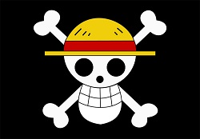 Piratas do Chapéu de Pallha Os Piratas do Chapéu de Palha, também conhecidos como a Tripulação do Chapéu de Palha ou simplesmente Chapéus de Palha, são uma tripulação pirata ascendente e infame que se originou do East Blue, mas que possui vários membros de locais diferentes. Eles são o principal foco e protagonistas do mangá e anime One Piece, e são liderados pelo protagonista principal, Monkey D. Luffy. Os "Chapéus de Palha" foram nomeados assim devido a assinatura de Luffy, seu chapéu, que foi dado a ele por Shanks, o Ruivo. Eles foram referidos assim pela primeira vez por Smoker em Alabasta. Os Chapéus de Palha atualmente consistem em dez membros cujas recompensas combinadas são iguais 815.001.000.000 de Berris (moeda no mundo de One Piece). Suas posições têm membros muito diferentes uns dos outros. Estes incluem um médico que é uma rena que muda de forma e que pode ser confundida com outra coisa, dependendo da sua forma, como um gorila quando é um humano completo ou um tanuki quando está na sua forma habitual; um cyborg que é um carpinteiro e que tem um comportamento muito excêntrico e não usa quase nada, exceto camisas e cuecas de natação; e um músico esquelético animado, morto-vivo e pervertido. Se suas vidas e atividades anteriores são consideradas, isso só aumenta a estranheza coletiva da tripulação: o capitão tem uma família composta de pessoas infames e perigosas; seu combatente era um ex-caçador de recompensas; seu cozinheiro é um príncipe fugitivo de uma família de assassinos reais; seu atirador é um mentiroso compulsivo cujo pai é membro da tripulação de um Yonkou; e sua navegadora é uma ladra especializado em roubar piratas. Sua arqueóloga também trabalhou para uma organização criminosa anteriormente dirigida por um Shichibukai, e ela também é uma assassina habilidosa e a única sobrevivente de Ohara. O timoneiro da tripulação é um Homem-Peixe que não era apenas um ex-Shichibukai e capitão dos Piratas do Sol, mas também um ex-prisioneiro da Grande Prisão, que é onde ele conheceu Luffy. A tripulação até capturou uma arma viva e Homie, anteriormente sob o controle de um dos Yonkou, e tê-lo de bom grado tornar-se um servo para a tripulação. Nefertari Vivi é a princesa da coroa de Alabasta, que junto com seu pato de estimação Karoo acabou viajando com os Piratas do Chapéu de Palha durante a maior parte da Saga Alabasta. Ela foi convidada a continuar navegando com a tripulação após a guerra em Alabasta, mas, no final, decidiu permanecer em Alabasta para cumprir seus deveres reais. Os Chapéus de Palha têm quatro usuários da Fruta do Diabo: Luffy, Chopper, Robin e Brook. A maior parte da tripulação é bastante jovem, com três membros em seus vinte anos, três ainda sendo adolescentes e quatro membros com trinta anos ou mais, embora dois dos quatro membros mais antigos sejam tão infantis quanto os outros. Diferentemente da maioria dos tripulantes, eles consideram que seus navios também são membros da tripulação.
Piratas dos Chapéus de Palha 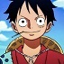 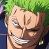 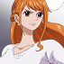 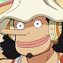 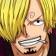 Monkey D. Luffy Roronoa Zoro Nami Usopp Sanji 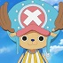 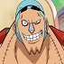 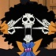 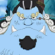 Tony Tony Chopper Nico Robin Franky Brook Jinbe Navios 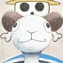 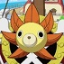 Going Merry Thousand Sunny